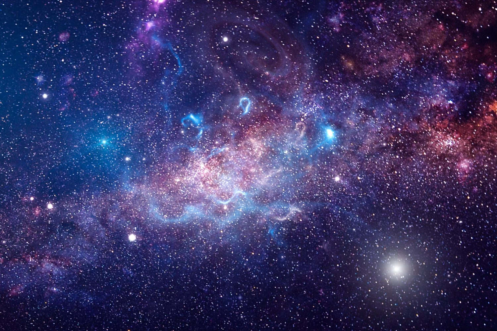

The wonders of Space...
Hello this website is all about space and it's wonders. Made by Mate Chanadiri.
Human Exploration

• The Apollo program, also known as Project Apollo, was the United States human spaceflight program carried out by the National Aeronautics and Space Administration (NASA), which succeeded in preparing and landing the first men on the Moon from 1968 to 1972.
• International Space Station - The station was designed between 1984 and 1993. Elements of the station were in construction throughout the US, Canada, Japan, and Europe beginning in the late 1980's.
• A Mars rover is a remote-controlled motor vehicle designed to travel on the surface of Mars. Rovers have several advantages over stationary landers: they examine more territory, they can be directed to interesting features, they can place themselves in sunny positions to weather winter months, and they can advance the knowledge of how to perform very remote robotic vehicle control.
Space Facts
Cosmic Distances
• Astronomical Unit (AU): The average distance between the Earth and the Sun, roughly 93 million miles (150 million kilometers). It's used for measuring distances within our solar system.
Light-Year: The distance light travels in one year, about 5.88 trillion miles> (9.46 trillion kilometers). This unit measures distances to stars and galaxies.
Parsec: Equivalent to about 3.26 light-years. Astronomers use this for even more precise measurements.
Star Life Cycle
• Stellar Nebula: Stars begin in nebulas, vast clouds of gas and dust. Gravity pulls the material together, forming a protostar.
Protostar: As gravity continues to pull in gas and dust, the core heats up. When it reaches a critical temperature, nuclear fusion begins, and a star is born.
Main Sequence: The star enters the longest phase of its life. Our Sun is a main sequence star, burning hydrogen into helium in its core. This phase can last billions of years.
Red Giant: When the hydrogen in the core is depleted, the star begins to burn helium. It expands and cools, becoming a red giant.
Planetary Nebula: For medium-sized stars like our Sun, the outer layers are shed, leaving behind a hot core that illuminates the ejected material, forming a planetary nebula.
White Dwarf: The remaining core becomes a white dwarf, which cools and dims over time.
Supernova: For massive stars, the core collapses, resulting in a massive explosion called a supernova.
Neutron Star or Black Hole: The remnants of the core form either a neutron star or, if the star was massive enough, collapse further into a black hole.
Exoplanets
• Transit Method: Observing the slight dimming of a star when a planet crosses in front of it.
Radial Velocity: Detecting slight wobbles in a star's motion caused by the gravitational pull of an orbiting planet.
Direct Imaging: Capturing images of planets by blocking out the star's light.
Gravitational Microlensing: Observing light from a distant star being bent and magnified by a planet's gravity.
Space Mysteries

• There are many and i mean many space mysteries like: Unexplained Phenomena, Fermi Paradox, Interstellar Travel Theories.